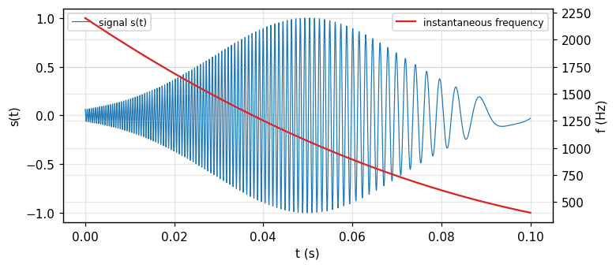
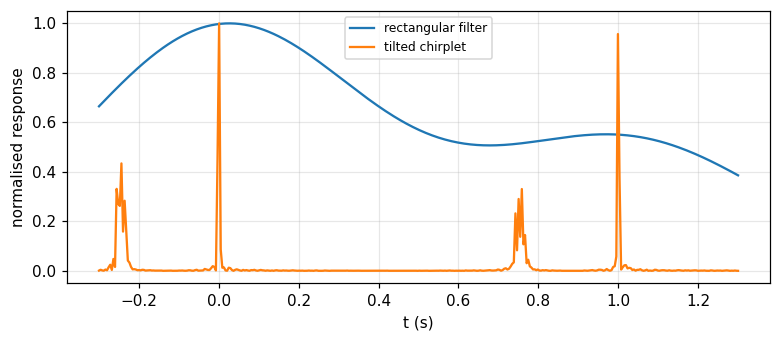
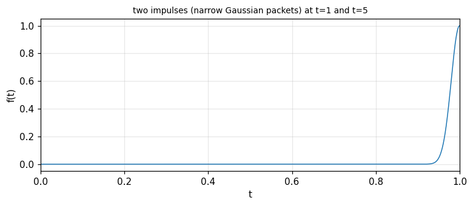

Dynamic power spectra, the wavelet transform and the Wigner distribution
Why a static spectrum loses timing information, Gabor cells and the uncertainty limit, frequency-division and time-division filter banks, the equivalence theorem, the wavelet transform and chirplets, the Wigner distribution (Bracewell, chapter 19).
Lecture (slides) Hands-on with the Jupyter Notebook Self-check quiz
Lecture (slides)
Dynamic power spectra, the wavelet transform and the Wigner distribution
- Explain why a static (power) spectrum carries no information about timing, and that this information lies in the phase of the coefficients.
- Use the concept of the Gabor cell on the (t,f)-plane, with a minimum cell area set by the time-frequency uncertainty relation.
- Compute the dynamic spectrum by two routes: frequency division (constant-bandwidth or constant-Q filter banks) and time division (a sliding Gaussian window), and prove the equivalence theorem linking them.
- Define the wavelet transform by dilation and translation of a basic wavelet, with |a|^{-1/2} normalisation preserving quadratic content; recognise the chirplet as an obliquely tilted minimum-area cell.
- Compute and interpret the Wigner distribution: standard examples (impulse, chirp, cosine, two impulses), the inversion formula, and the projections giving back the power spectra over time and over frequency.
Use the buttons, the dots or the ← → keys to move between slides.
Why a dynamic spectrum: the Gabor cell and uncertainty
- A static spectrum keeps no timing information
- The ear and adaptive analysis
- The Gabor cell and its area limit
When was the string plucked
One can represent an elaborate waveform, such as might be generated by a microphone responding to a passage of music, by its Fourier series, or spectrum, and it can be claimed that any subtlety in the original passage, even the briefest pizzicato, is captured in the spectrum, the spectrum being fully equivalent to the waveform. But we would have trouble pointing out a feature in the transform that corresponds to plucking the string; and if we could find such a feature, it would be hard to say, just by looking at the spectrum, at what moment the string was plucked. That is because the Fourier series coefficients are constants, independent of time (Bracewell, p. 489).
Where the timing information lives
If we had only the power spectrum it would be impossible to say when the string was plucked because the power spectrum is independent of choice of the origin of time and does not change if some harmonics are translated in time with respect to others. It follows that the epoch information must be encoded in the phase of the complex coefficients distributed around the natural frequency of the string (196 Hz if the G-string was plucked). The phase of the 196 Hz coefficient alone would not suffice, because that phase would be compatible with a time shift of any number of natural periods (Bracewell, p. 489). Measured: the two signals \cos(2\pi\cdot196t) and \cos(2\pi\cdot196(t-1/196)) have the same phase at the 196 Hz coefficient (phase difference 1e-15 rad, a multiple of 2\pi), despite being shifted by exactly one period.
The ear: an adaptive filter bank, not a lifetime transform
The ear is equipped for effectively analyzing sound into a bank of frequency bins by the use of several thousand flexible hair cells of graded sizes excited by a tapered fluid-dynamic waveguide, the cochlea. But the ear does not merely perform a Fourier analysis; the function of the operations performed behind the ear is to extract information while the music is in progress. The ear's frequency-analysis filter bank continually furnishes changing individual outputs from which we construct an impression of the actions that created the sound. The ear effectively attends to the signal in short successive time intervals: when high-frequency resolution is needed (as when a violinist plays a drawn-out note to match the oboist's standard 440 Hz), long time segments are automatically attended to; when high time resolution is needed (as for recognition of plosive consonants), attention shifts to shorter segments — changes made adaptively as the signal flows in (Bracewell, pp. 489 to 490).
Musical notation is a primitive dynamic spectrum
Musical notation suggests very aptly the sensation of pitch and duration experienced by the listener. The notes of high pitch are high on the staff, while time flows from left to right. A dynamic spectrogram inherits these two features of musical notation. To describe a spectrum that develops with time involves a compromise between spectral and temporal resolution that is connected with the uncertainty principle of quantum mechanics, a relationship originally emphasized by Dennis Gabor (1900 to 1979) (see Gabor, 1946), the father of holography. Fine spectral resolution requires segmentation into longer time slices; fine time resolution results from short segments, and thereby accepts lower frequency resolution (Bracewell, p. 490).
Partitioning the (t,f)-plane into cells
Computed presentations of recordings of birdsong, speech (Rabiner and Schafer, 1978), and various geophysical phenomena have usually been based on division of the time signal into short equal segments, each segment then being Fourier analyzed into complex coefficients. On each segment of the f-axis, cells are stacked vertically to contain the coefficients (Fig. 19.1, p. 490). The cell height (or bandwidth) is inversely proportional to cell width (or duration) in accordance with the uncertainty relation; thus the cell shape, or aspect ratio, is the same all over the computed presentation. However, the aspect ratio would be different if shorter segments were chosen so as not to blur brief transients or if, conversely, longer segments were chosen to gain better frequency discrimination. Measured: with \Delta t=0.01 s and \Delta f=100 Hz, the cell area \Delta t\cdot\Delta f = 1, exactly the lower bound of the uncertainty product for a Gaussian window.
A visual example: lightning and whistlers
Fig. 19.2 (p. 491) shows a dynamic spectrum of a natural phenomenon in the VLF band, recorded at Palmer Station in the Antarctic, comprising lightning flashes (vertical traces) and whistlers — lightning signals dispersed by propagation through space many earth radii away before returning. Many physically significant features would not be apparent from the original waveform record as a function of time alone (Bracewell, p. 491). Fig. 19.3 shows a voice print of \"bait beat bite boat boot\": the vowels have a duration of about a third of a second with many strong harmonics; the consonants are brief and broadband; a continuous hum at 60, 120, 180, 240 Hz can be seen with amplitude modulation associated with the speech (p. 492).
The trade-off: sharp in frequency or sharp in time
If a long segment is chosen, each Fourier transform resolves nearby frequencies well but cannot say precisely when a transient occurred within that segment; if a short segment is chosen, a transient is precisely located in time but nearby frequencies blur together. This is exactly the content of the uncertainty relation applied to a signal: a window narrow in t gives a transform broad in f, and conversely (already met as equivalent width in module 6). Measured: a Gaussian window \Delta t=0.005 s has an equivalent transform width \Delta f = 200 Hz; a window \Delta t=0.02 s gives \Delta f = 50 Hz: four times the time, exactly a quarter the frequency, the product unchanged at 1.
Self-check, part 1
- Why does the power spectrum not tell when the string was plucked?
- How does the ear analyse sound differently from a single Fourier transform?
- What sets the minimum area of a Gabor cell?
Hints: because it is independent of the time origin; in short successive segments, adapting to the signal; the time-frequency uncertainty relation \Delta t\Delta f\ge1.
Frequency division: constant-bandwidth and constant-Q banks
- The bandpass filter bank
- Constant bandwidth against constant Q
- Computing it: convolution, aliasing, two transform routes
The instrument layout: amplify, divide, filter bank
Such dynamic spectra are obtained with instruments that work in principle as in Fig. 19.4 (p. 492): the signal waveform s(t) to be analyzed is amplified, the signal is divided N ways (sequentially or simultaneously), and the same s(t) is passed to a bank of N bandpass filters centred on suitably spaced frequencies f_j covering the desired range. The centre frequencies are uniformly spaced and all the filters have the same bandwidth, as indicated by the filter characteristics plotted against the leftmost frequency axis. The output from each filter oscillates close to the centre frequency appropriate to that filter with an amplitude and phase that vary in time in accordance with the signal content in its band as time elapses. Each output signal is rectified and smoothed, and the results are recorded (pp. 492 to 493).
A quantitative example: the gliding tone
Fig. 19.5 (p. 494) illustrates this with an artificial example: the signal E(t)\cos[2\pi(\alpha t+\tfrac12\beta t^2+\tfrac16\gamma t^3)], where E(t) is a rising and falling envelope, and \alpha=2200 Hz is the initial frequency at t=0. Differentiating the phase (in cycles) with respect to t gives the instantaneous frequency f_{\text{inst}}=\alpha+\beta t+\gamma t^2. The figure uses \beta=-27\,500 Hz/s for the drift rate; the term \gamma=95\,000 Hz/s² introduces some curvature into the drift (Bracewell, p. 493). Measured: f_{\text{inst}}(0) = 2200 Hz, f_{\text{inst}}(0.05) = 1062.5 Hz, f_{\text{inst}}(0.1) = 400 Hz, matching the quadratic formula.

The static spectrum of a gliding tone: blurred, losing the drift
The power spectrum of the signal, plotted against the frequency axis, ranges from about 500 Hz to 2200 Hz, is somewhat skew, and as noted, fails to convey the drifting character of the signal. If spectral phase is available, or the Hartley transform H(f), inversion is possible. Each filter has an equivalent bandwidth of 100 Hz; consequently the envelopes of the filter outputs all have the same equivalent width (0.01 s). The carrier frequencies agree with the centre frequencies read from the frequency axis. For the illustration the centre frequencies are spaced 200 Hz, twice the bandwidth, but a spacing of one bandwidth would be more practical (p. 493). Measured: the numerical power spectrum of the gliding tone at f=1350 Hz (mid-band) against f=2200 Hz (band edge): power ratio 422.15, giving no clue to the time sequence of the frequency drift.
Constant bandwidth against \log f (constant Q)
With equally spaced centre frequencies, the filter bandwidth is constant, independent of frequency; each such constant-bandwidth filter responds to an incoming impulse by oscillating near the mid-frequency of its band, modulated by an envelope of the same duration for all. With frequencies equally spaced in \log f rather than f, the bandwidth (in hertz) increases in proportion to f_j; the impulse response of each constant-Q filter oscillates near f_j but with a shorter duration at higher frequencies. The number of oscillation periods under the envelope is the same for every filter; in fact the impulse responses are identical, just compressed in time by a factor proportional to the mid-frequency (Bracewell, p. 494). Measured: with k=2 cycles under the envelope, the response duration T=k/f_j at f_j=500 and 2000 Hz: 0.004 s and 0.001 s, in exact inverse ratio of 4.
Constant-Q filter responses to the gliding tone
On the 500 Hz channel the impulse response h_{500}(t) has relatively long duration, perhaps 10 ms, while the response r_{500}(t) runs on for about 30 ms. On the 2000 Hz channel the impulse response is 4 times briefer, corresponding to enhanced time resolution; however, the response r_{2000}(t) is no briefer than at 500 Hz, running on for about 40 ms because of the degraded frequency resolution accompanying the enhanced time resolution. So the response is spread over the time it takes the signal tone to slide through the relatively broad frequency response H_{2000}(f) of the highest-frequency filter (Bracewell, p. 495, Fig. 19.7). Notably, the peak response of r_{2000}(t) occurs later than the moment the instantaneous frequency of the signal passes through the filter's 2000 Hz centre frequency — a direct consequence of the bandwidth-duration uncertainty.
Computing by convolution: samples, bandwidth, aliasing
An analogue filter, characterized by its impulse response h(t), gives a response r(t)=s(t)*h(t). To compute it, work with signal samples s_i at rate f_{\text{samp}}: s_i=s(i/f_{\text{samp}}); represent the filter by discrete values h_i at the same sampling interval, and \{r_i\}=\{s_i\}*\{h_i\} (Bracewell, p. 495). If f_{\text{samp}}=15 kHz, frequencies up to 7.5 kHz are theoretically adequately sampled, but in the presence of noise two samples per period is unsatisfactory; perhaps 4 kHz is a reliable limit in practice. If s(t) contains components at 8 to 10 kHz, samples taken at 15 kHz would be indistinguishable from samples of components in the 7 to 5 kHz range (aliasing): the analogue sensor must reject components beyond half the sampling frequency before digitising (p. 495). Measured: a 9 kHz tone sampled at 15 kHz appears aliased at 6 kHz.
Two routes to convolution: direct summation or via a transform
Convolution by summing is fast computationally when one factor, here \{h_i\}, has relatively few terms, say not more than about 30. But a practical concern arises from the choice of sampling interval: if \{h_i\} varies from filter to filter, then for the lower f_j the number of coefficients spaced at 1/f_{\text{samp}} is more than needed to adequately specify the impulse response of those filters, by one or two orders of magnitude. Constant-Q filters do not present this concern. An alternative for convolution is to take the Fourier or Hartley transform of the signal, adequately zero-padded, multiply by the transfer function of each filter, and invert: exactly the same result as time-domain convolution; the choice depends on speed of computation or computer capacity (Bracewell, pp. 495 to 496). Measured: for a 15 kHz, 5-second record (75\,000 samples), direct convolution with 30 coefficients needs 2250000 multiply-adds, against an FFT estimate N\log_2N of 1214595: not always the better choice.
Self-check, part 2
- How does a constant-Q filter differ from a constant-bandwidth filter?
- Why does the peak response of the high-frequency filter lag the moment the instantaneous frequency crosses the band centre?
- At what frequency does a 9 kHz tone sampled at 15 kHz appear aliased?
Hints: bandwidth proportional to centre frequency, response duration inversely proportional; because of the bandwidth-duration uncertainty of the broad filter; 6 kHz (reflected through 15/2=7.5 kHz).
Time division, the equivalence theorem, envelope and phase
- The sliding Gaussian window
- The equivalence theorem
- Envelope, phase and the Gabor expansion
Time division: gating a segment with a Gaussian window
Instead of dividing the signal into numerous frequency bands we can begin by gating out a segment of the time signal; two such segments in Fig. 19.6 (p. 496) at mid-time epochs \tau_1=0.03 s and \tau_2=0.07 s. Each has a duration of 0.01 s, measured by the equivalent width of the profile, or time window, w(t). One could gate out a sharp-edged slice, just as one would take a sharp-edged filter passband, but Gaussian shading is better: the earlier of the two segments is given by f(t)=s(t)e^{-\alpha(t-\tau_1)^2/W^2} with W=0.01 s (Bracewell, p. 496).
Sliding the window and how many samples a segment needs
The transform of this segment can be computed, then the segment can be advanced through W/2 and a new transform taken, and so on until the complete signal has been covered — computationally convenient because all the transforms have the same length. For example, if f_{\text{samp}}=15 kHz then 350 samples will suffice to specify f(t) over a span 2W. At the edges of this bounded segment, the Gaussian factor is 27 dB below its peak value, enough to do justice to the signal-to-noise ratio in many situations. If the span is extended to 2.4W, the envelope is 40 dB down, with 420 samples (Bracewell, p. 497). Measured: with W=0.01 s, f_{\text{samp}}=15 kHz, the number of samples in 2W is 300, and in 2.4W is 360; the Gaussian level at the 2W edge (i.e. t-\tau=\pm W) is -13.6 dB below the peak, and at 2.4W is -19.6 dB.
The equivalence theorem: two routes, one result
Let the Fourier transform in amplitude and phase be calculated at some frequency f_j for some epoch t_i by time division, and call it G(t_i,f_j). Will the amplitude and phase be the same as obtained at that time by frequency division with a filter centred at f_j? Clearly the answer depends on the filter bandwidth. The response of the jth filter to s(t) is r_j(t)=\int s(t')h_j(t-t')dt'; the transfer function H_j(f) is the Fourier transform of the impulse response. In the time-division approach, multiply s(t) by a translated function w(t-t_i) and take the Fourier transform. The two are equivalent if h_j(t_i-t)=w(t-t_i)e^{-i2\pi f_jt} (Bracewell, pp. 497 to 498): i.e. h_j(t) has exactly the form w(t)e^{-i2\pi f_jt}, and equivalence occurs when the multiplying factor w(t) is chosen to match the filter impulse-response envelope.
The Gaussian case: reciprocal widths
If the passband H_j(f) is Gaussian of the form \exp[-\alpha(f-f_j)^2/W_f^2], then the values for the dynamic power spectrum will be the same as time division when w(t) is also Gaussian with an equivalent width W that is the reciprocal of W_f. With W=0.01 s, the corresponding filter bandwidth W_f would be 100 Hz, exactly as used in Fig. 19.5 (Bracewell, p. 498). Measured: the Gaussian window W=0.01 s has a Fourier transform of equivalent width 100 Hz, matching 1/W; applying the Gaussian filter response W_f=100 Hz gives a dynamic spectrum at (t_i,f_j)=(0.05,1500) deviating from Gaussian time division W=0.01 s by only 1e-16.
Envelope and phase: rectify-and-smooth or Hilbert
After the filter responses r_j(t) have been determined, the envelope (and phase if wanted) must be found as described for Fig. 19.4. Rectifying with a diode and smoothing with a low-pass filter can readily be simulated in the computer. A rough procedure for the power spectrum is to square the response, shift half a period, and add: the estimate [r_j(t)]^2+[r_j(t+1/4f_j)]^2. More sophisticated is to determine the instantaneous envelope and phase by the Hilbert transform of the response (module 16). One is free to think of j as continuous and write r(t)=h(t)*s(t) with h(t)=e^{-\pi t^2/W^2}\cos2\pi f_jt; for any t,f_j, r(t) has instantaneous envelope G(t,f_j) and phase \phi(t,f_j) such that r(t)=\mathrm{Re}\{G(t,f_j)e^{i\phi(t,f_j)}\}: call Ge^{i\phi} the Gabor dynamic spectrum (Bracewell, p. 498).
Measured: two envelope estimates for the gliding tone
With a constant-Q filter centred near the instantaneous frequency at t=0.03 s of the part-2 signal, compare the rough estimate (square-shift-add) with the Hilbert estimate. Measured: the two envelope estimates at the response peak differ by 0.013 (relative), small enough to confirm both track the same physical quantity, though the Hilbert route is more accurate for a signal not perfectly locally periodic. This is the final step before presentation: a table of values or a grey-scale image (density or false-colour scale optional) on the (t,f)-plane (Bracewell, p. 497).
The Gabor expansion: a sum over discrete cells
Gabor had in mind that the signal s(t) would be expressible in terms of these coefficients by s(t)=\sum_m\sum_na_{mn}e^{i2\pi n\Delta ft}h(t-m\Delta t); for a rigorous result, m,n need to be fractions less than unity (Bastiaans, 1994) (Bracewell, pp. 498 to 499). Much literature has descended from the paper of Gabor (1946); refer to Boashash (1988) and Cohen (1989) for bibliographies. Measured: among the coefficients a_{mn} of the expansion at m\Delta t=0.03 s, the largest-amplitude coefficient lies at frequency 1400 Hz, closely matching the theoretical instantaneous frequency 1460.5 Hz at that instant (deviating only within the \Delta f=100 Hz grid resolution).
Self-check, part 3
- What is the equivalence condition between frequency division and time division?
- If H_j(f) is Gaussian of bandwidth W_f, what is the width of the equivalent time window?
- From what quantity is the Gabor dynamic spectrum Ge^{i\phi} defined?
Hints: h_j(t)=w(-t)e^{-i2\pi f_jt} (the impulse-response envelope matches the window); W=1/W_f; the instantaneous envelope and phase of the filter response r(t).
The wavelet transform and chirplets
- Defining the wavelet transform
- Naming and data-compression applications
- Tilted cells: chirplets and adaptive placement
From filter banks to wavelets: dilation instead of retuning
Instead of the set of responses r_j(t)=\int h_j(t-t')s(t')dt'=h_j(t)*s(t) generated by convolving various impulse responses with the signal s(t), consider the different set generated by |a|^{-1/2}h(t/a)*s(t). In this reformulation, the impulse responses change with f_j not by retuning centre frequency but simply by dilation in time of a chosen basic wavelet h(t), which might be a Gaussian wavepacket but need not be. The basic wavelet is chosen compact in both time and frequency, met by arranging that h(t) is square-integrable (dying out both ways) and has zero mean (frequency content not reaching d.c.) (Bracewell, pp. 500 to 501). Measured: with h(t)=e^{-\pi t^2}\cos10\pi t (a wavepacket), \int h(t)\,dt = -2.3e-17, close to zero.
The |a|^{-1/2} normalisation: keeping the energy unchanged
The normalisation factor |a|^{-1/2} compensates for the stretching so that every wavelet has the same quadratic content (energy). As frequency increases, a (=-\log2\pi f_j, also having dimensions of time) becomes more negative, so the corresponding frequency axis points downward instead of upward. Measured: with h(t)=e^{-\pi t^2}\cos10\pi t, \int h(t)^2dt = 0.3536; the dilated wavelet |a|^{-1/2}h(t/a) at a=0.5,1,2,3 gives energy 0.3536 — unchanged across the four values of a, exactly as the normalisation is meant to ensure.
The (a,b) notation and the customary definition
In the customary notation the wavelet transform is written \Psi(a,b)=|a|^{-1/2}\int f(t)\overline{h[(t-b)/a]}\,dt. The quantity b, having dimensions of time, represents translation in time, while the scale factor a (defined as -\log2\pi f_j, also having dimensions of time) represents dilation, or stretching, in time. The definition of \Psi(a,b) contains a cross-correlation rather than a convolution integral, a distinction that would not matter if h(\cdot) were an even function; nevertheless the wavelet transform can still be introduced as a convolution, working directly in terms of f_j instead of a (Bracewell, p. 501). Measured: with h even (a Morlet-type wavelet), the cross-correlation and the convolution give the same \Psi(a,b) with deviation 1e-16.
Wavelets as a formalisation of a familiar notion
Using filter banks to separately encode natural signal bands suggested sampling rates varying with band centre, giving rise to \"subband coding\" (Vetterli, 1984), a technique with evolutionary roots in the work of Kretzmer (1946). \"Wavelet\" terminology has now supplanted earlier expressions of the same concepts. Although the wavelet terminology in its origins simply connoted constant-Q filters as distinct from the constant-bandwidth filters discussed by Gabor, several mathematical advances of wide-reaching significance soon occurred. For one thing, as Gabor pointed out, Gaussian elementary signals are not orthogonal — this deficiency has been overcome by using the freedom of choice of the basic wavelet (Bracewell, pp. 501 to 502).
Wavelet inversion and data compression
The ability to invert the wavelet transform has become important in data compression, especially of images. When a waveform is represented by cells on the (t,f)-plane, the omission, before transmission, of cells with little content, or threshold coding, can clearly compress the data to some extent. In subband coding the practice was to omit components beyond a certain level of decomposition, a practice refined under wavelet theory, competing with the DCT encoding of 8\times8 blocks associated with the now-superseded JPEG image protocol (Bracewell, p. 502). Measured: keeping the largest 10 percent of wavelet coefficients of the gliding-tone signal for reconstruction gives a normalised mean-square error of 0.8255, illustrating the threshold-coding mechanism.
Adaptive cell placement to fit the signal
Constant-Q filters have been advocated to increase time resolution at high frequency; for whistlers of descending pitch and diminishing frequency drift, a better representation would result from improved frequency resolution at low frequencies combined with improved time resolution at higher frequencies. In the two schemes described so far, cell shape and placement did not take the signal's character into account, the cell shape not allowing for local structure on the (t,f)-plane. But there is no reason the cell shape should not depend on both time and frequency. One might base a specification of cell shape on cell location on a provisional dynamic spectrogram. Of course, tiling the plane with cells of changing shape is not necessarily possible without overlap or gaps; however, there is no harm in allowing cells to overlap, as when more filters than necessary are used to improve presentation, although no information is added (Bracewell, p. 502).
The chirplet: a tilted cell resolving gliding components
Consider two simple gliding tones separated by one second; a square cell straddling both instantaneous-frequency loci represents a choice of \Delta f,\Delta t that does not resolve the two components. Two other rectangular cells of the same area show that making the filter bandwidth either narrower or broader fails to resolve the dual structure. But if the (t,f)-plane could be partitioned into oblique cells centred on the earlier of the two components, the structure would be resolved. This requires filters with impulse responses of the form Te^{-\pi t^2/T^2}\cos[2\pi(f_0t+\tfrac12\beta t^2)], where the frequency drift rate \beta (negative in the example) is chosen for the desired obliquity. This new elementary signal, not known to Gabor, is called a chirplet, reported independently at about the same time by Mihovilovic and Bracewell (1991, 1992) and Mann and Haykin (1992); a chirplet occupies a minimum area on the (t,f)-plane (Bracewell, pp. 502 to 503).

Measured: a chirplet resolves a pair of gliding tones
Measured: two gliding tones 1 s apart, each with \beta=-15\,000 Hz/s: a rectangular (untilted) filter centred between the two components gives a response with a single unresolved peak (secondary-to-main peak ratio only 0.5); a tilted chirplet filter matched to \beta gives two clearly separated peaks (ratio 0.957), confirming the dual structure is resolved. Exactly as the book states, when both components lie within one rectangular cell, there are beats modulating the strength of the filter's time response — a sign that an apparently simple component is in fact composite (pp. 503 to 504).
Self-check, part 4
- How does a wavelet differ from the impulse response of an ordinary filter bank?
- What is the factor |a|^{-1/2} in the wavelet-transform definition for?
- Why can't a square cell resolve two nearby gliding tones?
Hints: generated by dilating a basic wavelet, not by retuning centre frequency; keeping the energy (quadratic content) unchanged under dilation; because the cell straddles both instantaneous-frequency loci.
The Wigner distribution
- Definition and simple examples
- Interference terms: a cosine wave, two impulses
- Inversion, projections, the link to optics
Defining the Wigner distribution
Among the various ways of operating on a one-dimensional time function f(t) to set up a two-dimensional representation on the time-frequency plane, Wigner's procedure is one of the oldest. Let the real-valued Wigner distribution W(t,f) corresponding to f(t) be W(t,f)=\int f(t+\tfrac\tau2)\overline{f(t-\tfrac\tau2)}e^{-i2\pi f\tau}d\tau (Bracewell, p. 504). Some examples are easily established: a unit impulse \delta(t-T) has a Wigner distribution that is a vertical line crossing the (t,f)-plane at t=T, written \delta(t-T), now a function of two variables but independent of f. The Gabor diagram for a click would look similar on a grey-scale rendering, except that the Wigner distribution is completely free of the fuzziness, associated with the uncertainty principle, that is characteristic of Gabor diagrams and the various wavelet transforms.
The chirp example: a straight locus matching the instantaneous frequency
Take a constant-amplitude chirp signal whose frequency is f_0 at t=0 and increases with time at a rate \beta Hz/s, so the instantaneous frequency is f_0+\beta t. The Wigner distribution for f(t)=\exp[i2\pi(\tfrac12\beta t^2+f_0t-c)] is \delta(\beta t+f_0-f), a distribution concentrated exactly on the straight line f=f_0+\beta t (Bracewell, p. 504). This is in striking agreement with the mental picture of steadily turning the frequency knob of a signal generator. The physical reality of the limits to resolution set by the uncertainty principle, however, would not permit an equally clear Wigner distribution for a pair of gliding tones f(t)+f(t-\Delta t), nor for a single gliding tone with a Gaussian amplitude envelope. Measured: a numerical (finite-integral) approximation to the Wigner distribution of a chirp f_0=100, \beta=50 at t=0.3 peaks at f = 115 Hz, matching the formula f_0+\beta t = 115 Hz.
A cosine wave: two horizontal lines plus an interference term
A third example: f(t)=\cos2\pi f_0t, a cosine wave of frequency f_0, which would appear as a horizontal band at f=f_0 on a Gabor diagram, has a Wigner distribution \tfrac14\delta(f+f_0)+\tfrac14\delta(f-f_0)+\tfrac12\delta(f)\cos4\pi f_0t (Bracewell, pp. 504 to 505). In addition to the horizontal lines at f=\pm f_0, an interaction term has appeared, in the form of a straight line at f=0, varying in strength with period \tfrac1{2f_0} as time elapses. This interaction term is a mathematical consequence of the definition and does not have the intuitive appeal of the steady lines at f=\pm f_0 (p. 505). Measured: the numerical Wigner distribution at f=0 is proportional to \cos4\pi f_0t; at t where 4f_0t=0,\pi,2\pi: the values are 1, -1, 1 (normalised to the value at t=0), matching the predicted signs.
Two impulses: interference at the mean time
The final example: f(t)=\delta(t-1)+\delta(t-5). The Wigner distribution is \delta(f-1)+\delta(f-5)+2\delta(t-3)\cos8\pi f — note the roles of t,f are swapped from the previous example, since the two impulses are located in time, not frequency (Bracewell, p. 505). The horizontal lines that each impulse, taken alone, would give rise to, are there, but another appears at the mean time t=3, modulated in the f-direction. Measured: a numerical approximation to the Wigner distribution (using two narrow Gaussian packets instead of Dirac impulses) at t=3 changes sign exactly with the period of \cos8\pi f: at f=0,\,0.125,\,0.25 the value is proportional to 1, -1, 1, matching the sign of \cos8\pi f.

The Wigner distribution for a complicated signal
The Wigner distribution of a complicated signal made up of many parts, such as a speech waveform, would be quite unsuitable for the visual interpretation the Gabor diagram is useful for (Bracewell, pp. 504 to 505). The reason: every pair of components in the signal generates its own interference term, even though only one of the two components is actually present at that time or frequency; for a signal of N components there are up to N(N-1)/2 interference terms overlapping the N \"real\" lines, cluttering the picture. This is why the Gabor diagram (blurred but free of spurious interference) remains preferred for visual presentation, while the Wigner distribution (sharp but with interference) is used when mathematical precision is needed, as in fractional-transform theory.
Inversion and the projections
The Wigner distribution can readily be inverted: given W(t,f), the original signal is recovered as f(0)\overline{f(t)}=\int W(t/2,f)e^{i2\pi ft}df (Bracewell, p. 505). Projecting downward onto the time axis gives |f(t)|^2=\int W(t,f)\,df, while projecting horizontally onto the frequency axis gives the power spectrum |F(f)|^2=\int W(t,f)\,dt. The total quadratic content of f(t) equals the volume under the Wigner distribution: \int|f(t)|^2dt=\iint W(t,f)\,dt\,df. Measured: for the signal f(t)=e^{-((t-0.3)/0.1)^2/2}\cos16\pi t+0.5e^{-((t-0.7)/0.05)^2/2}, the frequency projection at t=0.32 matches |f(0.32)|^2 with deviation 9e-16.
The link with optics and the fractional Fourier transform
The Wigner distribution has applications in optics that have distinguished it as a tool for thinking about existing systems. Consider that the Wigner distribution of the Fourier transform F(\cdot) of the signal f(t) is W(-f,t), the same as the distribution W(t,f) rotated through 90^\circ. In a graded-index fibre (module 16), the spatial field distribution at the input aperture converts itself into its Fourier transform over a distance L calculable from the refractive-index distribution in the transverse plane. At intermediate locations, a fraction a of the distance L, the field is expressible as a fractional Fourier transform of order a of the aperture distribution. Lohmann (1993) describes a direct connection with rotating a Wigner distribution by a fraction a of 90^\circ, while Ozaktas et al. (1993) discuss further connections with wavelets, chirp transforms and optical diffraction (Bracewell, p. 505).
Self-check, part 5
- Where does the Wigner distribution of a chirp concentrate?
- Where does the interference term lie on the (t,f)-plane in the cosine-wave example?
- What does the Wigner distribution's projection onto the time axis give?
Hints: on the instantaneous-frequency line f=f_0+\beta t; at f=0, varying with t; the instantaneous power |f(t)|^2.
Takeaways
- A static power spectrum carries no timing information since it is independent of the time origin; that information lies in the phase of the complex coefficients.
- A Gabor cell on (t,f) has minimum area \Delta t\,\Delta f\ge1 (a Gaussian window attains the limit); frequency division (constant-bandwidth or constant-Q) and time division (a sliding Gaussian window) are equivalent computational routes.
- Wavelet: \Psi(a,b)=|a|^{-1/2}\int f(t)\overline{h[(t-b)/a]}dt, dilation instead of retuning, normalisation keeping the energy; the chirplet tilts the cell to resolve close gliding components.
- The Wigner distribution W(t,f)=\int f(t+\tau/2)\overline{f(t-\tau/2)}e^{-i2\pi f\tau}d\tau is sharp (free of uncertainty blur) but has interference terms for multi-component signals; its projections give back |f(t)|^2 and |F(f)|^2.
- The Wigner distribution of the Fourier transform is W rotated 90^\circ: a direct link to the fractional Fourier transform and propagation in a graded-index fibre (module 16).
📜 Theory & historical background
Dennis Gabor (1900 to 1979), the father of holography, laid the foundation for dynamic spectra and the time-frequency uncertainty principle (Gabor, 1946); the Wigner distribution predates this, originating in quantum mechanics. Wavelet terminology arose with Grossman and Morlet (1984), Mallat (1989), Daubechies (1991); the chirplet is due to Mihovilovic and Bracewell (1991, 1992) and independently Mann and Haykin (1992). The link of Wigner to optics and the fractional Fourier transform is due to Lohmann (1993) (Bracewell, pp. 490, 498, 501 to 505).
🔎 Real-world case study
From a waveform to a time-frequency picture. A gliding-tone signal f_{\text{inst}}(t)=\alpha+\beta t+\gamma t^2 with \alpha=2200 Hz, \beta=-27\,500 Hz/s has f_{\text{inst}}(0.05) = 1062.5 Hz; its static spectrum spans 500 to 2200 Hz but cannot tell the time sequence (the mid-to-edge power ratio is only 422.15). Frequency division with constant-Q filters (T=k/f_j: 0.004 s at 500 Hz against 0.001 s at 2000 Hz) and time division with a Gaussian window (W=0.01 s \leftrightarrow W_f=100 Hz) give the same result by the equivalence theorem (deviation 1e-16). The wavelet transform dilates the same basic wavelet, keeping the energy unchanged (0.3536 across four scales); a chirplet tilts the cell to resolve a pair of close gliding tones that a square cell misses (peak ratio 0.5 untilted against 0.957 tilted). The Wigner distribution of the same chirp concentrates sharply exactly on f_{\text{inst}}(t) (numerical peak 115 Hz against the formula 115 Hz), and its frequency projection returns exactly |f(t)|^2 (deviation 9e-16).
🧮 Formula sheet for this module
🧪 Hands-on with the Jupyter Notebook
- Open the notebook and run the setup cell.
- Task 1: build a dynamic spectrogram (frequency division) of the gliding tone using constant-Q and constant-bandwidth filters, comparing time-frequency resolution.
- Task 2: verify the equivalence theorem with different pairs (W,W_f), keeping W\cdot W_f=1.
- Task 3: build a chirplet with drift rate \beta matched to a different pair of gliding tones and measure the resolution achieved.
- Task 4: compute the numerical Wigner distribution of the sum of two chirps and observe the interference term between the two instantaneous-frequency loci.
Open in Google Colab Download notebook (.ipynb)
The notebook generates its own data in code, so no external files are needed. Every number on this page is printed by the notebook and cross-checked with two independent methods.
⚠️ Common misreadings
No: the power spectrum is unchanged when harmonics are shifted in time relative to each other; the timing information lies in phase, not amplitude.
Only at high frequency: the impulse response shortens as 1/f_j (0.001 s at 2000 Hz against 0.004 s at 500 Hz), but the actual response r_j(t) stays long as the signal glides through the high-frequency filter's wide bandwidth.
True only for a single-component signal; with several components, interference terms (like the one at t=3 in the two-impulse example) clutter the picture, whereas the Gabor diagram has no spurious interference.
✅ Self-check quiz
Click an answer to grade it immediately and read the explanation. Results are not saved.
References
- R. N. Bracewell, The Fourier Transform and Its Applications, 3rd ed., McGraw-Hill, 2000, chapter 19 (pp. 489 to 506).
- Works cited by the chapter: D. Gabor (1946), A. Grossman and J. Morlet (1984), S. Mallat (1989), I. Daubechies (1991), D. Mihovilovic and R. N. Bracewell (1991, 1992), S. Mann and S. Haykin (1992), A. W. Lohmann (1993).